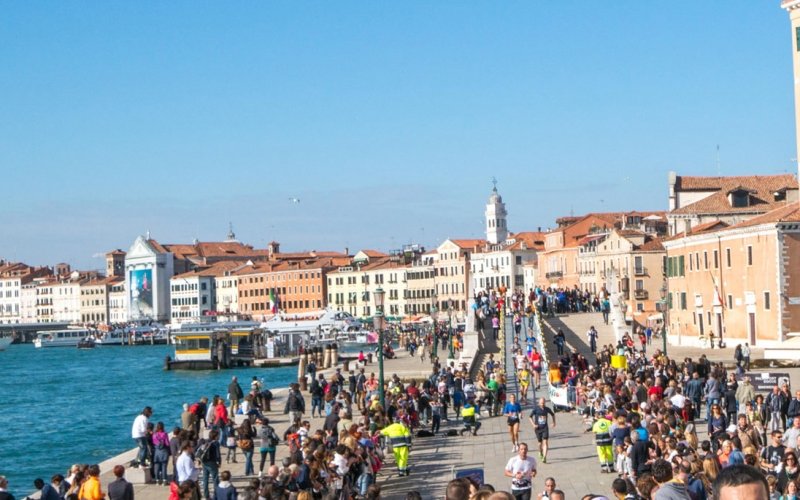
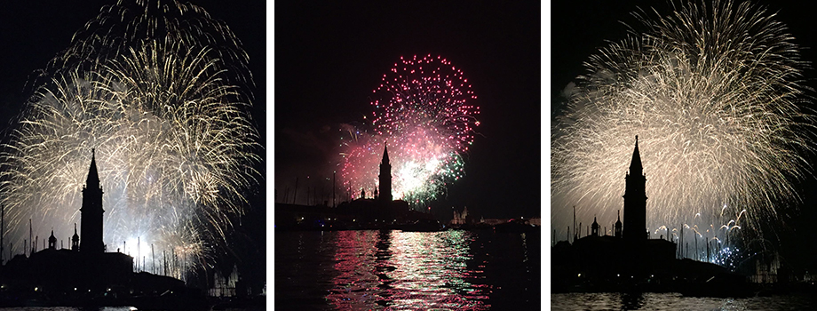

Venice Marathon

It is called Maratona di Venezia in Italian. This is a long road race that is heard annual in Venice,
since 1986. It was usually held in October. The race starts in Stra and it ends in Riva dei Sette Martiri
in Venice. The race was entered by about 5,351 people in 2019. The marathon was first held on 18th
May 1986, with about 713 athlete. The first man to win the marathon was Salvatore Bettiol from Italy, in 1986
his finishing time was 2:18:44. The first woman to win was Paola Moro also from Italy and her finishing time
2:28:10. The man whose holding the record for first place is John Komen from Kenya, in 2009 and his record
time was 2:08:13. On the other hand the first place is held Helena Kirop also from Kenya, the record
was undertook in 2011 and her record time was 2:23:37.
Regata Storica

It takes place on the first Sunday of September, along the Grand Canal annually. It was first held
around January 1315. The Regata Storica is the centerpiece of the Venetian rowing calendar.
Festa Del Redentore

Festa Del Redentore is held on the third Sunday of July and fireworks play there in way of giving thanks
to the Venetians for the deliverance from the terrible plague. The event was first held around 1577.
Vogalonga

Vogalonga is held every year on the Pentecost Day. It was first held in 1974 and it is hosted to rediscover
the lagoon, its landscapes and habitat.
Festa Della Sensa

The Feast Della Sensa is an event held to appreciate the marriage between Venice and the Sea.It is hosted annually
This year, 2021 the event is to be held on the 16 th of May. The first time
people in Venice celebrated Feast Della Sensa was aroud May the 9 th 1000.
Venice Carnvial

The Venice Carnvial is held annually. In the year 2021 the festival was held in from the 6th
of February to the 16 th of the February. The event was first held in 1162 in celebration of
the Venice Republic's victory over it's enemy: the Aquileia.
The Feast Day Of The Madanna Della Salute

The feast day of the madonna della salute is held every year on the 21th of November
and it is hosted to express the city's religious spirit. On this day a temporary bridge of boats is built
on the grand canal. The grand canal connects the area of San Moise and S. Maria Del Giglio. The boat bridge
enables people to easily reach the Basilica.